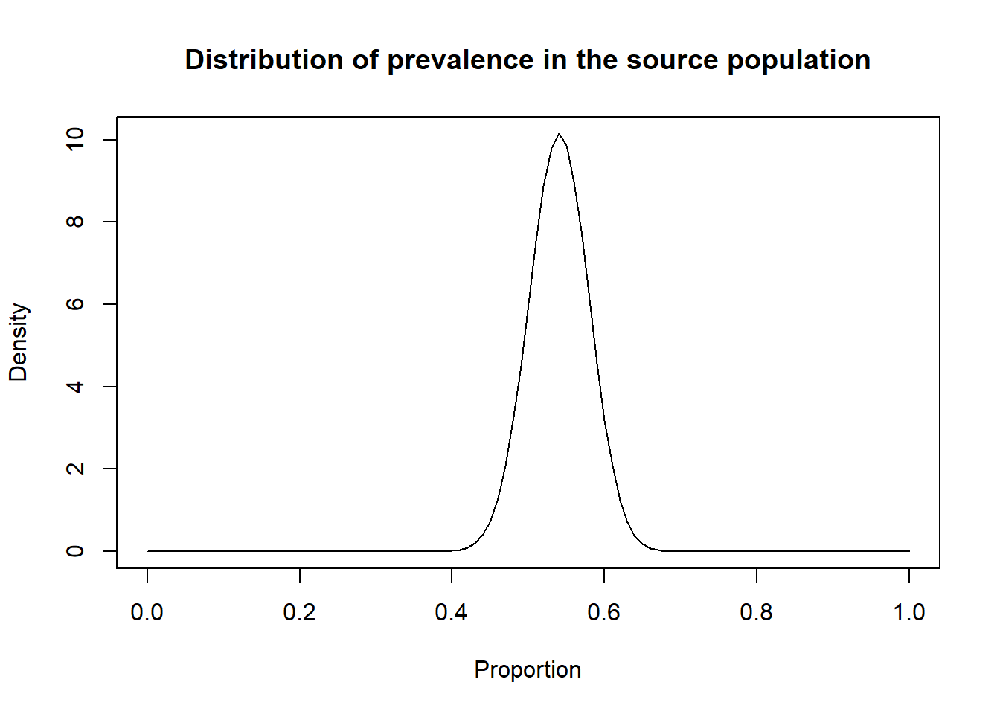
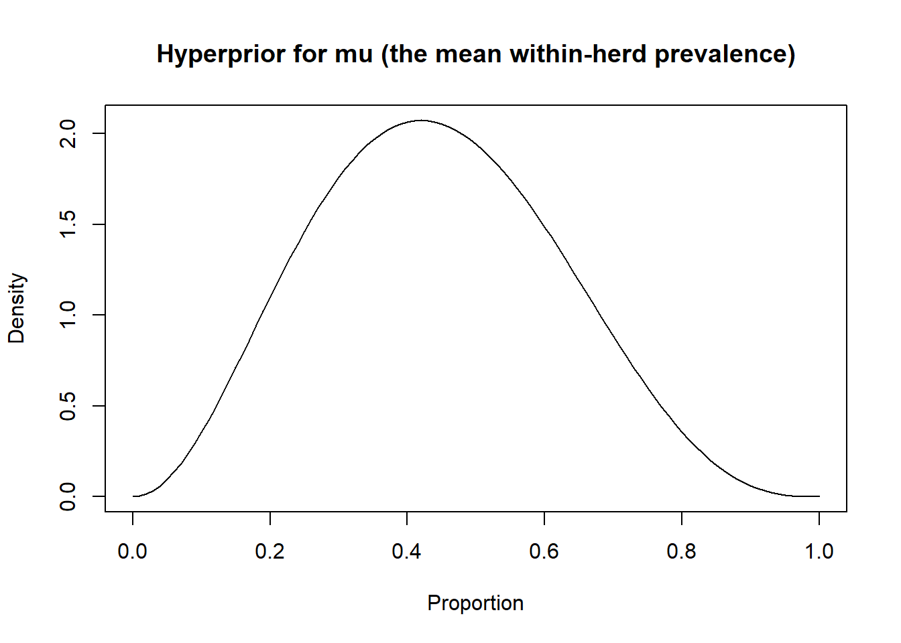
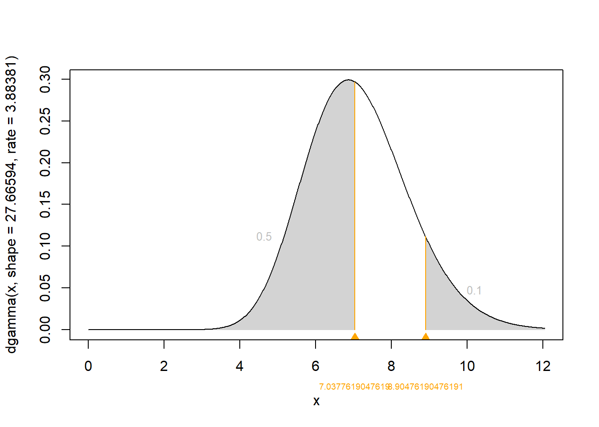

Chapter 7 Multiple populations
In some situations, the diagnostic tests will be apply to two or more populations with different disease prevalence. In such cases, it could be reasonable to assume that:
- The prevalence varies from one population to another
- The tests Se and Sp are constant across populations
It could then be advantageous to model the different populations simultaneously in the same LCM as described by Hui and Walter (1980). With two populations, we would have six unknown parameters (SeA and SpA, SeB and SpB, and each population’s prevalence, P1 and P2). When conducting two diagnostic tests in two populations, the data generated can be presented as two 2x2 tables presenting the cross-classified results of the two tests.
Table. Cross-classified results from two diagnostic tests in two populations.
| Population 1 | Population 2 | |||||
|---|---|---|---|---|---|---|
| Test A+ | Test A- | Test A+ | Test A- | |||
| Test B+ | Pop1 n1 | Pop1 n3 | Test B+ | Pop2 n1 | Pop2 n3 | |
| Test B- | Pop1 n2 | Pop1 n4 | Test B- | Pop2 n2 | Pop2 n4 |
We can see from these 2x2 tables that we have 6 degrees of freedom available. Indeed, in each of the 2x2 table, we have three cells that do contribute a valuable information and the information in the 4th cell can be “guessed” using the total number of observations minus the content of the other three cells. The model proposed by Hui and Walter (1980) is, therefore, barely identifiable.
Cheung et al. (2021) have described how the number of unknown parameters and degrees of freedom vary as function of the number of populations studied when comparing two conditionally independent diagnostic tests (see below).
Table. Number of degrees of freedom and of unknown parameters when comparing two conditionally independent diagnostic tests across various number of populations (adapted from Cheung et al. (2021)).
| Number of Populations | Number of unknown parameters (np) | Number of degrees of freedom (df) | Minimum number of informative priors needed |
|---|---|---|---|
| 1 | 5 | 3 | 2 |
| 2 | 6 | 6 | 0 |
| 3 | 7 | 9 | 0 |
| 4 | 8 | 12 | 0 |
| p | 4+p | 3*p | if df < np, then np-df |
7.1 Likelihood function with 2 populations
With two populations, the likelihood function that could be used to link the observed data (Pop1 n1, Pop1 n2, …, Pop2 n4) to the unknown parameters (SeA and SpA, SeB and SpB, and P1 and P2) can be described as follows:
\(Ppop1[1:4] \sim dmulti(Pop1[1:4], nPop1)\)
\(Ppop1_1 = P1*SeA*SeB + (1-P1)*(1-SpA)*(1-SpB)\)
\(Ppop1_2 = P1*SeA*(1-SeB) + (1-P1)*(1-SpA)*SpB\)
\(Ppop1_3 = P1*(1-SeA)*SeB + (1-P1)*SpA*(1-SpB)\)
\(Ppop1_4 = P1*(1-SeA)*(1-SeB) + (1-P1)*SpA*SpB\)
\(Ppop2[1:4] \sim dmulti(Pop2[1:4], nPop2)\)
\(Ppop2_1 = P2*SeA*SeB + (1-P2)*(1-SpA)*(1-SpB)\)
\(Ppop2_2 = P2*SeA*(1-SeB) + (1-P2)*(1-SpA)*SpB\)
\(Ppop2_3 = P2*(1-SeA)*SeB + (1-P2)*SpA*(1-SpB)\)
\(Ppop2_4 = P2*(1-SeA)*(1-SeB) + (1-P2)*SpA*SpB\)
Where \(Ppop1_1\) to \(Ppop1_4\) and \(Ppop2_1\) to \(Ppop2_4\) are the probabilities of falling in a given cell of the 2x2 table in population 1 and population 2, respectively; and \(nPop1\) and \(nPop2\) are the number of individuals tested in population 1 and 2, respectively. Thus, if you look carefully, we simply duplicated the likelihood function used before and we added subscripts to differentiate the cells, probabilities, and disease prevalence of the two populations. Pretty cool right? If you have three, four, etc populations, you can then extend the likelihood function to include them.
7.2 Organizing the data with 2 populations
To run such a model, we simply need to provide, for each population, a dataset where n1, n2, n3, and n4 are listed (in that order). For instance, if we use herd #1 and herd #2 from the PAG vs. US study, we will have the following 2x2 tables:
Table. Cross-classified results from the PAG and US diagnostic tests in herd #1 and herd #2.
| Herd 1 | Total | Herd 2 | Total | |||||
|---|---|---|---|---|---|---|---|---|
| US+ | US- | US+ | US- | |||||
| PAG+ | 138 | 10 | PAG+ | 71 | 8 | |||
| PAG- | 1 | 113 | PAG- | 0 | 69 | |||
| Total | 262 | Total | 148 |
The dataset could, thus be created as follows:
7.3 The JAGS model with 2 populations
We could provide the values that will be used to described the prior distributions as we did before (so they are included in the model text file). The only difference is that we now have two prevalence parameters (P1 and P2) to describe. In the example below, I will use vague priors for all parameters (just because we can!).
#We could first create labels for TestA and TestB
TestA <- "US"
TestB <- "PAG"
#Provide information for the prior distributions (all beta distributions) for the 6 unknown parameters
Prev1.shapea <- 1 #a shape parameter for Prev in population 1
Prev1.shapeb <- 1 #b shape parameter for Prev in population 1
Prev2.shapea <- 1 #a shape parameter for Prev in population 2
Prev2.shapeb <- 1 #b shape parameter for Prev in population 2
Se.TestA.shapea <- 1 #a shape parameter for Se of TestA
Se.TestA.shapeb <- 1 #b shape parameter for Se of TestA
Sp.TestA.shapea <- 1 #a shape parameter for Sp of TestA
Sp.TestA.shapeb <- 1 #b shape parameter for Sp of TestA
Se.TestB.shapea <- 1 #a shape parameter for Se of TestB
Se.TestB.shapeb <- 1 #b shape parameter for Se of TestB
Sp.TestB.shapea <- 1 #a shape parameter for Sp of TestB
Sp.TestB.shapeb <- 1 #b shape parameter for Sp of TestB
#We will also need the total number of individuals tested in each population (nPop1 and nPop2)
n <- sapply(datalist, sum)
nPop1 <- n[1]
nPop2 <- n[2]With that, we have everything that is needed to write the JAGS model.
#Create the JAGS text file
model_2tests_2pop_indep <- paste0("model{
#=== LIKELIHOOD ===#
#=== POPULATION 1 ===#
Pop1[1:4] ~ dmulti(p1[1:4], ",nPop1,")
p1[1] <- Prev1*Se_", TestA, "*Se_", TestB, " + (1-Prev1)*(1-Sp_", TestA, ")*(1-Sp_", TestB, ")
p1[2] <- Prev1*Se_", TestA, "*(1-Se_", TestB, ") + (1-Prev1)*(1-Sp_", TestA, ")*Sp_", TestB, "
p1[3] <- Prev1*(1-Se_", TestA, ")*Se_", TestB, " + (1-Prev1)*Sp_", TestA, "*(1-Sp_", TestB, ")
p1[4] <- Prev1*(1-Se_", TestA, ")*(1-Se_", TestB, ") + (1-Prev1)*Sp_", TestA, "*Sp_", TestB, "
#=== POPULATION 2 ===#
Pop2[1:4] ~ dmulti(p2[1:4], ",nPop2,")
p2[1] <- Prev2*Se_", TestA, "*Se_", TestB, " + (1-Prev2)*(1-Sp_", TestA, ")*(1-Sp_", TestB, ")
p2[2] <- Prev2*Se_", TestA, "*(1-Se_", TestB, ") + (1-Prev2)*(1-Sp_", TestA, ")*Sp_", TestB, "
p2[3] <- Prev2*(1-Se_", TestA, ")*Se_", TestB, " + (1-Prev2)*Sp_", TestA, "*(1-Sp_", TestB, ")
p2[4] <- Prev2*(1-Se_", TestA, ")*(1-Se_", TestB, ") + (1-Prev2)*Sp_", TestA, "*Sp_", TestB, "
#=== PRIOR ===#
Prev1 ~ dbeta(",Prev1.shapea,", ",Prev1.shapeb,") ## Prior for Prevalence in population 1
Prev2 ~ dbeta(",Prev2.shapea,", ",Prev2.shapeb,") ## Prior for Prevalence in population 2
Se_", TestA, " ~ dbeta(",Se.TestA.shapea,", ",Se.TestA.shapeb,") ## Prior for Se of Test A
Sp_", TestA, " ~ dbeta(",Sp.TestA.shapea,", ",Sp.TestA.shapeb,") ## Prior for Sp of Test A
Se_", TestB, " ~ dbeta(",Se.TestB.shapea,", ",Se.TestB.shapeb,") ## Prior for Se of Test B
Sp_", TestB, " ~ dbeta(",Sp.TestB.shapea,", ",Sp.TestB.shapeb,") ## Prior for Sp of Test B
}")
#write as a text (.txt) file
write.table(model_2tests_2pop_indep,
file="model_2tests_2pop_indep.txt",
quote=FALSE,
sep="",
row.names=FALSE,
col.names=FALSE)With this code, you could, again, simply modify the labels for Test A and Test B, and the shape parameters for the prior distributions. The text file with the JAGS model will automatically be updated. Currently, it looks like this:
Again, we will need to provide a list of initial values (one per Markov chain) for all unknown parameters. Careful again, we now have two prevalence (Prev1 and Prev2).
#Initializing values for the parameters Prev, and the Ses and Sps of the two tests for the 3 chains.
inits <- list(list(Prev1=0.50,
Prev2=0.50,
Se_US=0.90,
Sp_US=0.90,
Se_PAG=0.90,
Sp_PAG=0.90),
list(Prev1=0.60,
Prev2=0.60,
Se_US=0.80,
Sp_US=0.80,
Se_PAG=0.80,
Sp_PAG=0.80),
list(Prev1=0.40,
Prev2=0.40,
Se_US=0.70,
Sp_US=0.70,
Se_PAG=0.70,
Sp_PAG=0.70)
)We can run the model using jags() function as seen before.
library(R2jags)
library(coda)
#Run the Bayesian model
bug.out <- jags(data=datalist,
model.file="model_2tests_2pop_indep.txt",
parameters.to.save=c("Prev1", "Prev2", "Se_US", "Sp_US", "Se_PAG", "Sp_PAG"),
n.chains=3,
inits=inits,
n.iter=11000,
n.burnin=1000,
n.thin=1,
DIC=FALSE) Then we could produce the diagnostic plots, compute the ESS, and print out our results as we did previously (results not shown).
7.4 Conditional dependence
As discussed before, an important assumption of the LCM described in the previous section is that diagnostic tests are conditionally independent. This assumption, however, can be relaxed using the method proposed by Dendukuri and Joseph (2001). Note that, we are now increasing the number of unknown parameters and we will, therefore, have to provide additional informative distributions.
Table. Number of degrees of freedom and of unknown parameters when comparing two conditionally dependent diagnostic tests across various number of populations (adapted from Cheung et al. (2021)).
| Number of Populations | Number of unknown parameters (np) | Number of degrees of freedom (df) | Minimum number of informative priors needed |
|---|---|---|---|
| 1 | 7 | 3 | 4 |
| 2 | 8 | 6 | 2 |
| 3 | 9 | 9 | 0 |
| 4 | 10 | 12 | 0 |
| p | 4+2+p | 3*p | if df < np, then np-df |
For this example, in addition to specifying priors for covp and covn, we will add informative priors on US Se and Sp.
library(epiR)
# US sensitivity ----------------------------------------------------------
# Sensitivity of US: Mode=0.90, and we are 97.5% sure >0.85
Se.US <- epi.betabuster(mode=0.90, conf=0.975, imsure="greater than", x=0.85)
# US specificity ----------------------------------------------------------
# Specificity of US: Mode=0.95, and we are 97.5% sure >0.90
Sp.US <- epi.betabuster(mode=0.95, conf=0.975, imsure="greater than", x=0.90)
Se.TestA.shapea <- Se.US$shape1 #a shape parameter for Se of TestA
Se.TestA.shapeb <- Se.US$shape2 #b shape parameter for Se of TestA
Sp.TestA.shapea <- Sp.US$shape1 #a shape parameter for Sp of TestA
Sp.TestA.shapeb <- Sp.US$shape2 #b shape parameter for Sp of TestANow, we could add the covp and covn parameters in the likelihood function, and specified prior distributions for these as we did before:
#Create the JAGS text file
model_2tests_2pop_dep <- paste0("model{
#=== LIKELIHOOD ===#
#=== POPULATION 1 ===#
Pop1[1:4] ~ dmulti(p1[1:4], ",nPop1,")
p1[1] <- Prev1*(Se_", TestA, "*Se_", TestB, " + covp) + (1-Prev1)*((1-Sp_", TestA, ")*(1-Sp_", TestB, ") + covn)
p1[2] <- Prev1*(Se_", TestA, "*(1-Se_", TestB, ") - covp) + (1-Prev1)*((1-Sp_", TestA, ")*Sp_", TestB, " - covn)
p1[3] <- Prev1*((1-Se_", TestA, ")*Se_", TestB, " - covp) + (1-Prev1)*(Sp_", TestA, "*(1-Sp_", TestB, ") - covn)
p1[4] <- Prev1*((1-Se_", TestA, ")*(1-Se_", TestB, ") + covp) + (1-Prev1)*(Sp_", TestA, "*Sp_", TestB, " + covn)
#=== POPULATION 2 ===#
Pop2[1:4] ~ dmulti(p2[1:4], ",nPop2,")
p2[1] <- Prev2*(Se_", TestA, "*Se_", TestB, " + covp) + (1-Prev2)*((1-Sp_", TestA, ")*(1-Sp_", TestB, ") + covn)
p2[2] <- Prev2*(Se_", TestA, "*(1-Se_", TestB, ") - covp) + (1-Prev2)*((1-Sp_", TestA, ")*Sp_", TestB, " - covn)
p2[3] <- Prev2*((1-Se_", TestA, ")*Se_", TestB, " - covp) + (1-Prev2)*(Sp_", TestA, "*(1-Sp_", TestB, ") - covn)
p2[4] <- Prev2*((1-Se_", TestA, ")*(1-Se_", TestB, ") + covp) + (1-Prev2)*(Sp_", TestA, "*Sp_", TestB, " + covn)
#=== PRIOR ===#
Prev1 ~ dbeta(",Prev1.shapea,", ",Prev1.shapeb,") ## Prior for Prevalence in population 1
Prev2 ~ dbeta(",Prev2.shapea,", ",Prev2.shapeb,") ## Prior for Prevalence in population 2
Se_", TestA, " ~ dbeta(",Se.TestA.shapea,", ",Se.TestA.shapeb,") ## Prior for Se of Test A
Sp_", TestA, " ~ dbeta(",Sp.TestA.shapea,", ",Sp.TestA.shapeb,") ## Prior for Sp of Test A
Se_", TestB, " ~ dbeta(",Se.TestB.shapea,", ",Se.TestB.shapeb,") ## Prior for Se of Test B
Sp_", TestB, " ~ dbeta(",Sp.TestB.shapea,", ",Sp.TestB.shapeb,") ## Prior for Sp of Test B
#=== CONDITIONAL DEPENDENCE STRUCTURE ===#
covp ~ dunif(minp,maxp)
covn ~ dunif(minn,maxn)
minp <- (1-Se_", TestA, ")*(Se_", TestB, "-1)
minn <- (Sp_", TestA, "-1)*(1-Sp_", TestB, ")
maxp <- min(Se_", TestA, ",Se_", TestB, ") - Se_", TestA, "*Se_", TestB, "
maxn <- min(Sp_", TestA, ",Sp_", TestB, ") - Sp_", TestA, "*Sp_", TestB, "
}")
#write as a text (.txt) file
write.table(model_2tests_2pop_dep,
file="model_2tests_2pop_dep.txt",
quote=FALSE,
sep="",
row.names=FALSE,
col.names=FALSE)This text file looks like this:
Again, the list of initial values will have to be modified to include (covp and covn).
#Initializing values for the parameters Prev, and the Ses and Sps of the two tests for the 3 chains.
inits <- list(list(Prev1=0.50,
Prev2=0.50,
Se_US=0.90,
Sp_US=0.90,
Se_PAG=0.90,
Sp_PAG=0.90,
covp=0.0,
covn=0.0),
list(Prev1=0.60,
Prev2=0.60,
Se_US=0.80,
Sp_US=0.80,
Se_PAG=0.80,
Sp_PAG=0.80,
covp=0.01,
covn=0.01),
list(Prev1=0.40,
Prev2=0.40,
Se_US=0.70,
Sp_US=0.70,
Se_PAG=0.70,
Sp_PAG=0.70,
covp=0.05,
covn=0.05)
)And, when running the model using jags(), we would also ask to monitor covp and covn. Note that we have increased the number of iterations / burn-in period (remember the autocorrelation problem seen with LCM with a covariance between tests?).
library(R2jags)
library(coda)
#Run the Bayesian model
bug.out <- jags(data=datalist,
model.file="model_2tests_2pop_dep.txt",
parameters.to.save=c("Prev1", "Prev2", "Se_US", "Sp_US", "Se_PAG", "Sp_PAG", "covp", "covn"),
n.chains=3,
inits=inits,
n.iter=210000,
n.burnin=10000,
n.thin=1,
DIC=FALSE) ## Compiling model graph
## Resolving undeclared variables
## Allocating nodes
## Graph information:
## Observed stochastic nodes: 2
## Unobserved stochastic nodes: 8
## Total graph size: 72
##
## Initializing modelThen we could produce the diagnostic plots, compute the ESS, and print out our results as we did previously (results not shown).
7.5 Hierarchical latent class models
7.5.1 The general idea
In a given study, you may have measured individuals from a substantial number of sub-populations. For instance, in the Dufour et al. (2017) original study comparing the PAG-ELISA and ultrasound tests for diagnosing pregnancy in dairy cows, cows from 18 commercial dairy herds were studied. In such case, we could, for instance, split the data in 18 sub-populations and use the models described in the preceding sections, with 18 likelihood functions, and where we would estimate 18 prevalence (one for each herd). This approach is totally fine, but it may not be the most elegant, nor efficient model for that type of study. If we were to use this approach, and assuming conditional independence between tests, we would have:
- 22 unknown parameters to estimate (SeA and SpA, SeB and SpB, and each sub-population’s prevalence, P1 to P18 in this case);
- 54 degrees of freedom (3 degrees of freedom for each 2x2 table, and 18 2x2 tables).
Nevertheless, this would be an identifiable model and we would not necessarily require informative priors.
On the other hand, Hanson et al. (2003) have proposed a slightly different, and possibly more elegant and efficient, modelling approach named the hierarchical latent class model. Actually, in most cases, estimating the disease prevalence in each of the sub-populations (e.g., in each of the 18 herds in the PAG study) is not a primary objective as compared to estimating test accuracy and/or the distribution of within-herd prevalence in the population of herds from which these herds were sampled (i.e., the source population). In such case, we could use the model described in the figure below.

Briefly, in this model we would assume that each of the recruited herds originated from a large population of herds (the source population). We would then only need to describe the distribution of within-herd prevalence of the source population (rather than the prevalence of sick individuals of each herd, as we did so far). We could propose a beta(a, b) distribution as prior for this distribution of within-herd prevalence. Given the hierarchical nature of the priors (i.e., the priors are on the source population, not on the studied sub-populations), we will rather refer to them as hyperpriors. In the hierarchical model, instead of providing hyperpriors for a and b, we will instead provide hyperpriors for mu and psi. Remember from Chapter 2 that:
- mu represents how the mean within-herd prevalence varies in the source population of herds;
- psi describes the spread of the distribution around the mean within-herd prevalence in the source population of herds.
And also, in a beta(a,b) distribution:
\(a = mu*psi\)
\(b = psi*(1-mu)\)
For mu, it would be quite natural to use a beta distribution as hyperprior, given that the mean within-herd prevalence need to be bounded by 0.0 and 1.0. For psi, which represent a variance, a gamma distribution would be a better option for this hyperprior.
We have not discussed gamma distributions in Chapter 2, since they are not used in the other BLCM presented in this document. Briefly, the gamma distribution is also defined by two parameters α and β. The α parameter is also known as the shape parameter and the β parameter is known as the rate parameter. Gamma distributions can take different forms, but are bounded to values between 0 and ∞. Moreover, a Gamma(0.001, 0.001) would correspond to a vague gamma distribution.
7.5.2 The likelihood function
We could described the likelihood function for the hierarchical model as follow:
\(\text{for i in }1:NumberOfHerds\)
\(n[i,1:4] \sim dmulti(p[i,1:4], NumAnimInHerd[i])\)
\(p[i,1] = prevInHerd[i]*SeA*SeB + (1-prevInHerd[i])*(1-SpA)*(1-SpB)\)
\(p[i,2] = prevInHerd[i]*SeA*(1-SeB) + (1-prevInHerd[i])*(1-SpA)*SpB\)
\(p[i,3] = prevInHerd[i]*(1-SeA)*SeB + (1-prevInHerd[i])*SpA*(1-SpB)\)
\(p[i,4] = prevInHerd[i]*(1-SeA)*(1-SeB) + (1-prevInHerd[i])*SpA*SpB\)
\(prevInHerd[i] \sim dbeta(alpha, beta)\)
\(alpha = mu*psi\)
\(beta = psi*(1-mu)\)
Where NumberOfHerds is the number of sub-populations in the study, n[i,1:4] is the content, for each sub-population, of the 4 cells (n1, n2, n3, and n4) from the 2x2 tables with cross-classified tests results (i.e., the observed data), NumAnimInHerd[i] is the number of individuals tested in each sub-population, and prevInHerd[i] is the prevalence of disease in each sub-population. dbeta(alpha, beta) is the distribution of within-herd prevalence in the source population (assumed to follow a beta distribution) and is defined by two unknown parameters, mu and psi, for which we will have to propose hyperpriors. We could use a beta hyperprior for mu and a gamma hyperprior for psi. These hyperpriors could be vague (e.g., beta(1.0, 1.0) and gamma(0.001, 0.001)) or informative (we will see in a following section how to propose informative hyperpriors for mu and psi).
If we examine the hierarchical model more carefully, we see one important difference between this model and the models we have used so far, the inclusion of a loop in the likelihood function. Briefly, we are asking to repeat this likelihood function for each sub-population (i.e., for (i in 1:NumberOfHerds)). Again, if we try to translate this likelihood function in words, and focusing on Herd #1 (to simplify) the number of individuals in cell n1 (i.e., TestA+ and TestB+) is determined by the number of individuals tested in Herd #1 (NumAnimInHerd[1]) and the probability (p[1]) of falling in that cell. The latter itself depends on the true prevalence of disease in Herd #1 (prevInHerd[1]; which can be drawn from the source population distribution of within-herd prevalence, dbeta(alpha, beta)), and on each of the two tests sensitivity (SeA and SeB) and specificity (SpA and SpB). We can use similar reasoning for n2, n3, and n4. Finally, the multinomial distribution would further impose that the four probabilities (p[1], p[2], p[3], and p[4]) have to sum up to 1.0 (i.e., 100%) within a given herd.
Note that we now have:
- 6 unknown parameters to estimate (SeA and SpA, SeB and SpB, mu, and psi), as compared to 4 parameters plus one parameter for each sub-population for the approach described in the preceding sections;
- 3 degrees of freedom for each sub-population.
For instance, with the 18 commercial herds available in the Dufour et al. (2017) original study, we would have 6 unknown parameters and 54 degrees of freedom. If we were to use 30 herds, we would still have 6 unknown parameters, but now 90 degrees of freedom, etc. This is the reason why we described the Hanson et al. (2003) hierarchical model as “more efficient”.
7.5.3 The data
Data for the hierarchical model will have to be organized as follow. Briefly, we will first need a dataset where we report, for each sub-population, the number of individuals with a given combination of tests results. For instance, below we are importing an Excel sheet with the organized results. The example below is reproduced from Dufour et al. (2017; Table 1).
library(readxl) #A library that can import .xlsx documents
obs <- read_excel("Data/Herd level results.xlsx")
#Check the data
obs## # A tibble: 18 × 4
## `TestA+TestB+` `TestA+TestB-` `TestA-TestB+` `TestA-TestB-`
## <dbl> <dbl> <dbl> <dbl>
## 1 20 0 2 14
## 2 7 0 0 4
## 3 10 0 0 10
## 4 12 0 1 21
## 5 17 0 2 9
## 6 2 0 0 3
## 7 46 1 3 37
## 8 0 0 0 1
## 9 7 0 1 5
## 10 7 0 0 3
## 11 12 1 2 12
## 12 8 0 1 7
## 13 11 0 0 9
## 14 5 0 1 10
## 15 71 0 8 69
## 16 10 0 0 3
## 17 5 0 0 1
## 18 5 0 0 1You can see that we have used this order:
- TestA + and TestB +
- TestA + and TestB -
- TestA - and TestB +
- TestA - and TestB -
This will be important, because we will use the same order for the 4 probabilities in the likelihood function.
Then, we will need a second dataset where we report the total number of individual tested by sub-population. This can be computed from the above dataset as follow:
#Compute total number of animals by herd
totals <- rowSums(obs)
#Check the total number of animals per herd
totals## [1] 36 11 20 34 28 5 87 1 13 10 27 16 20 16 148 13 6 6The previous two pieces of data will have to be reunited together. We can do this using:
## $obs
## # A tibble: 18 × 4
## `TestA+TestB+` `TestA+TestB-` `TestA-TestB+` `TestA-TestB-`
## <dbl> <dbl> <dbl> <dbl>
## 1 20 0 2 14
## 2 7 0 0 4
## 3 10 0 0 10
## 4 12 0 1 21
## 5 17 0 2 9
## 6 2 0 0 3
## 7 46 1 3 37
## 8 0 0 0 1
## 9 7 0 1 5
## 10 7 0 0 3
## 11 12 1 2 12
## 12 8 0 1 7
## 13 11 0 0 9
## 14 5 0 1 10
## 15 71 0 8 69
## 16 10 0 0 3
## 17 5 0 0 1
## 18 5 0 0 1
##
## $totals
## [1] 36 11 20 34 28 5 87 1 13 10 27 16 20 16 148 13 6 6Finally, we will need to know the number of sub-populations studied. Again, this can be computed as follow:
## [1] 18We could also assign labels to the tests for future usage, as we did before:
7.5.4 The priors
We will need to assign priors (or hyperpriors) for mu, psi, SeA and SpA, SeB and SpB. Below, we have used vague priors (or hyperpriors) for all these unknown parameters. If we were to use informative priors for SeA, SpA, SeB, or SpB, we could implement this as in the previous chapters. Informative priors for mu and psi are bit more tedious to generate; we will describe in a following section how to achieve this.
mu.shapea <- 1.0 # a shape parameter for mu
mu.shapeb <- 1.0 # b shape parameter for mu
psi.shapea <- 0.001 # α (shape) parameter for gamma
psi.shapeb <- 0.001 # β (rate) parameter for gamma
Se.TestA.shapea <- 1 #a shape parameter for Se of TestA
Se.TestA.shapeb <- 1 #b shape parameter for Se of TestA
Sp.TestA.shapea <- 1 #a shape parameter for Sp of TestA
Sp.TestA.shapeb <- 1 #b shape parameter for Sp of TestA
Se.TestB.shapea <- 1 #a shape parameter for Se of TestB
Se.TestB.shapeb <- 1 #b shape parameter for Se of TestB
Sp.TestB.shapea <- 1 #a shape parameter for Sp of TestB
Sp.TestB.shapeb <- 1 #b shape parameter for Sp of TestB7.5.5 Write the JAGS model
The text file we would like to generate would look as the screen capture below.

The script below can be used to generate this text file.
#Create the JAGS text file
model_2tests_hierarchical <- paste0("model{
#=== LIKELIHOOD ===#
for (i in 1:", numherd,"){
obs[i, 1:4] ~ dmulti(p[i, 1:4], totals[i])
p[i, 1] <- prev[i]*Se_", TestA, "*Se_", TestB, " + (1-prev[i])*(1-Sp_", TestA, ")*(1-Sp_", TestB, ")
p[i, 2] <- prev[i]*Se_", TestA, "*(1-Se_", TestB, ") + (1-prev[i])*(1-Sp_", TestA, ")*Sp_", TestB, "
p[i, 3] <- prev[i]*(1-Se_", TestA, ")*Se_", TestB, " + (1-prev[i])*Sp_", TestA, "*(1-Sp_", TestB, ")
p[i, 4] <- prev[i]*(1-Se_", TestA, ")*(1-Se_", TestB, ") + (1-prev[i])*Sp_", TestA, "*Sp_", TestB, "
prev[i] ~ dbeta(alpha, beta)
}
#=== PRIOR ===#
alpha <- mu*psi ## a parameter for the hierarchical beta distribution
beta <- psi*(1-mu) ## b parameter for the hierarchical beta distribution
mu ~ dbeta(", mu.shapea, ", ", mu.shapeb, ") ## Mean within-herd prevalence distribution in the source population
psi ~ dgamma(", psi.shapea, ", ", psi.shapeb, ") ## Spread of the within-herd prevalence distribution in the source population
Se_", TestA, " ~ dbeta(", Se.TestA.shapea, ", ", Se.TestA.shapeb, ") ## Prior for Se of Test A
Sp_", TestA, " ~ dbeta(", Sp.TestA.shapea, ", ", Sp.TestA.shapeb, ") ## Prior for Sp of Test A
Se_", TestB, " ~ dbeta(", Se.TestB.shapea, ", ", Se.TestB.shapeb, ") ## Prior for Se of Test B
Sp_", TestB, " ~ dbeta(", Sp.TestB.shapea, ", ", Sp.TestB.shapeb, ") ## Prior for Sp of Test B
}")
#write as a text (.txt) file
write.table(model_2tests_hierarchical,
file="model_2tests_hierarchical.txt",
quote=FALSE,
sep="",
row.names=FALSE,
col.names=FALSE)7.5.6 Generating initial values
Remember, the initial value is the first value where each Markov chain will start.
- You have to specify one initial value for each unknown parameter in the model (here mu, psi, and the tests’ accuracy parameters);
- If you decide to run three Markov chains, you will need three different sets of initial values;
- You can also let the software choose a random value to start each chain.
7.5.7 Running the model
As we did before, we could use the following script to run the model. Note that the tests accuracy parameters, along with mu and psi are the main parameters that you could monitor for that model.
library(R2jags)
library(coda)
#Run the Bayesian model
bug.out <- jags(data=datalist,
model.file="model_2tests_hierarchical.txt",
parameters.to.save=c("Se_US", "Sp_US", "Se_PAG", "Sp_PAG",
"mu", "psi"),
n.chains=3,
inits=inits,
n.iter=25000,
n.burnin=5000,
n.thin=1,
DIC=FALSE) ## Compiling model graph
## Resolving undeclared variables
## Allocating nodes
## Graph information:
## Observed stochastic nodes: 18
## Unobserved stochastic nodes: 24
## Total graph size: 321
##
## Initializing model7.5.9 Getting our estimates
Our estimates can be obtained as we did before.
## Inference for Bugs model at "model_2tests_hierarchical.txt", fit using jags,
## 3 chains, each with 25000 iterations (first 5000 discarded)
## n.sims = 60000 iterations saved. Running time = 14.24 secs
## mu.vect sd.vect 2.5% 25% 50% 75% 97.5% Rhat n.eff
## Se_PAG 0.992 0.006 0.976 0.989 0.994 0.997 1.000 1.001 26000
## Se_US 0.958 0.026 0.907 0.939 0.960 0.980 0.998 1.002 1800
## Sp_PAG 0.950 0.030 0.891 0.928 0.951 0.974 0.997 1.002 1800
## Sp_US 0.991 0.007 0.973 0.987 0.993 0.997 1.000 1.001 33000
## mu 0.542 0.031 0.482 0.521 0.541 0.562 0.603 1.002 2000
## psi 339.660 429.221 17.028 68.461 176.371 421.923 1711.638 1.012 470
##
## For each parameter, n.eff is a crude measure of effective sample size,
## and Rhat is the potential scale reduction factor (at convergence, Rhat=1).Finally, you may be interested in describing the distribution of within-herd prevalence of the source population. In the following script we used mu and psi median estimates to generate this plot.
mu <- 0.540 #Here used the median estimate for mu
psi <- 161.242 #Here used the median estimate for psi
alpha <- mu*psi
beta <- psi*(1-mu)
#plot the posterior distribution
curve(dbeta(x,
shape1=alpha,
shape2=beta),
from=0, to=1,
main="Distribution of prevalence in the source population",
xlab = "Proportion",
ylab = "Density")
7.5.10 Generating informative hyperpriors for mu and psi
Hanson et al. (2003) proposed to use a beta distribution as a hyperprior for mu and a gamma distribution for psi. They also provided a method to elicit values for these hyperpriors. This method is, however, slightly more technical than what we have done so far.
7.5.10.1 mu
For mu, (the mean within-herd prevalence) we could use a method similar to the one we used before. For instance, we could have some literature, external data, or experts opinion, indicating a most likely (mode) mean within-herd prevalence in the source population, and we could provide the 97.5th (or another) percentile for this mean within-herd prevalence. As an example, in the PAG vs. ultrasound study, Dufour et al. (2017) used reproductive data from 30 other herds from the same region as the 18 recruited herds. They computed the within-herd pregnancy prevalence at testing for these 30 herds and found a 50th and 95th percentiles of 42% and 74%, respectively. Using the epiR epi.betabuster function we could find the corresponding beta distribution as follow:
library(epiR)
# Prevalence as Mode=0.42, and we are 95% sure <0.74
rval <- epi.betabuster(mode=0.42,
conf=0.95,
imsure="less than",
x=0.74)
rval$shape1 #View the a shape parameter in rval## [1] 3.132## [1] 3.94419#Assign the generated values for later usage.
mu.shapea <- rval$shape1
mu.shapeb <- rval$shape2
#plot the prior distribution
curve(dbeta(x,
shape1=mu.shapea,
shape2=mu.shapeb),
from=0, to=1,
main="Hyperprior for mu (the mean within-herd prevalence)",
xlab = "Proportion",
ylab = "Density")
7.5.10.2 psi
For psi, which describe the spread of the distribution around the mean within-herd prevalence, Hanson et al. (2003) proposed to describe the uncertainty around the 90th percentile of the distribution of the mean within-herd prevalence. More specifically, they proposed to use the most likely value (mode) for that 90th percentile and a less likely and large value (for instance the 90th percentile) of this 90th percentile.
For instance, in Dufour et al. (2017), using the 30 herds from the same region, they found a 90th percentile of 65% of pregnancy (i.e., the top 10% of herds would achieve 65% pregnancy rate at pregnancy testing). Through experts opinion, they identified that this 90th percentile could hardly be higher than 75%, thus a 90th percentile of the 90th percentile of 75%. In other words, they proposed that the top 10% of herds would most probably have a pregnancy rate at testing of 65%, but this could possibly (90% sure) be up to 75%.
Then, as described by Hanson et al. (2003), the 50th percentile of the gamma distribution for psi can be computed by adding the a and b terms of the beta(a, b) distribution with mean of 42% (based on mu’s mode) and 90th percentile of 65% (based on the above assumption on the median value for the 90th percentile).
fifty.psi <- epi.betabuster(mode=0.42,
conf = 0.90,
imsure="less than",
x=0.65)
# Computing the value for the 50th percentile for the gamma distribution for psi
fifty <- fifty.psi$shape1 + fifty.psi$shape2
fifty## [1] 8.904762The 90th percentile of the gamma distribution is computed in the same manner, but using the a and b terms of the beta(a, b) distribution with mean of, again, 42%, but 90th percentile of 75%.
ninety.psi <- epi.betabuster(mode=0.42,
conf = 0.90,
imsure="less than",
x=0.75)
# Computing the value for the 50th percentile for the gamma distribution for psi
ninety <- ninety.psi$shape1 + fifty.psi$shape2
ninety## [1] 7.037762Using this methodology, we obtained the 50th and 90th percentiles for the gamma distribution for psi of 8.9047619 and 7.0377619, respectively. Finally, these percentiles can be translated to obtain the shape and rate parameters of the corresponding gamma distribution.
To achieve this in R, we can use the GammaParmsFromQuantile.R function that was developed by Patrick Brisle from McGill U. This function is not currently part of R package. It has to be downloaded from Patrick Brisle website. You can save the function on your computer, we did save it in a folder named “Functions”. In the chunk below, the function is called and then used to identify the two parameters (shape and rate) for psi’s gamma distribution.
source('Functions/GammaParmsFromQuantiles.R')
psi.gamma <- gamma.parms.from.quantiles(q=c(fifty, ninety), p=c(0.50, 0.90), plot=T)
## [1] 27.66594## [1] 3.88381A gamma (27.7, 3.9) distribution can, therefore, be used to represent hyperprior information on psi.
7.5.11 Extensions
Of course, the hierarchical model presented could be extended as we have seen before to add, for instance, covariance terms between tests (thus, allowing for conditional dependence between tests). We could also extend the likelihood function to compare 3 (or 4, or 5, etc) tests as we will see in Chapter 9.